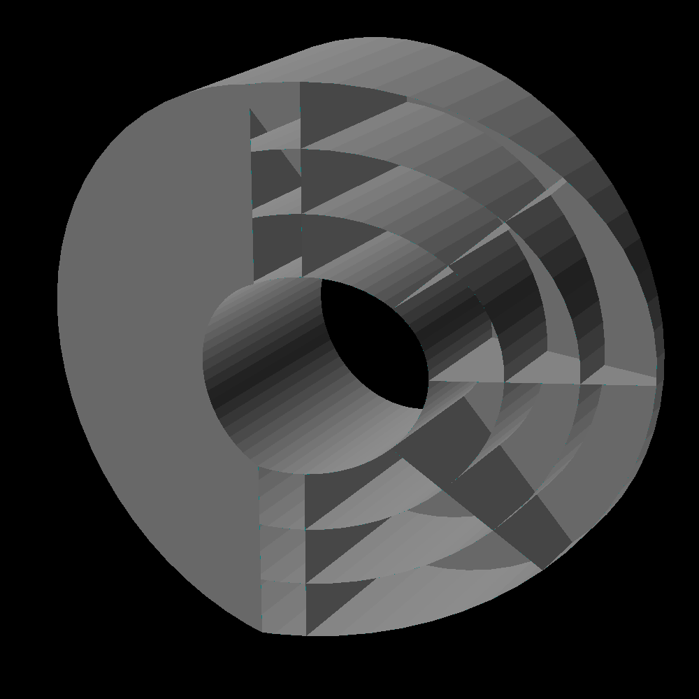
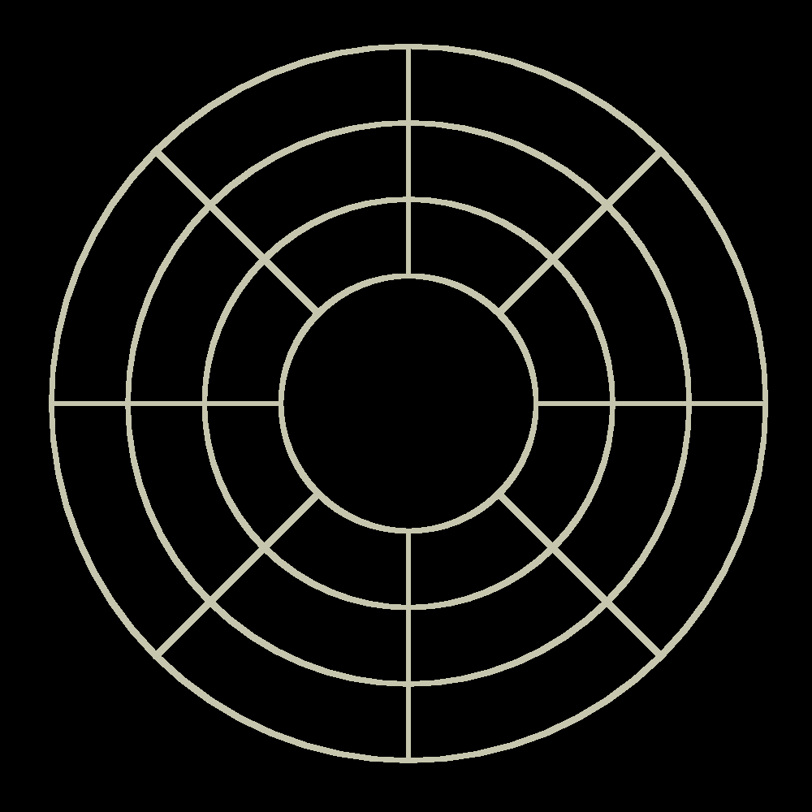
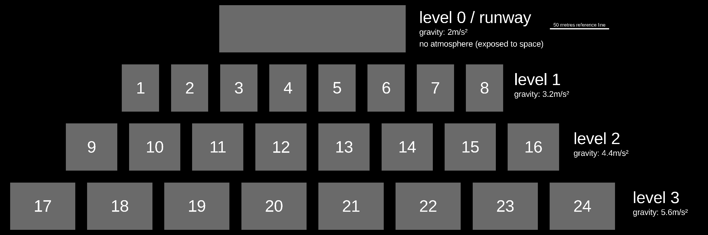

Finespun
Finespun

| summary habitat data table | |
|---|---|
| Habitat radius | 70 m |
| Habitat length | 50 m |
| Aerial density | 790kg/m2 |
| Structural mass | 82 615 830 kg |
| Structural volume | 10457.7m3 |
| Internal volume | 769690.200 m3 |
| Hull thickness | 0.1 m |
| Provided centrifugal gravity | 5.6m/s2, 4.4m/s2, 3.2m/s2 |
| Internal atmospheric pressure | 21 000 Pa (0.207 atm ) |
| Provided living area (3 floors) | 290597.321 m2 |
| Time to complete a rotation | 22.214 s |
| Safety factor | 11.238 |
| hull material: electrolytic asteroidal kamacite | |
| Density | 7900kg/m3 |
| Yield strength | 200MPa |

The station is divided into 24 sections that retain pressure independently. There are 3 levels to the ring, each 15m tall, with radii of 70m, 55m and 40m, producing apparent gravity of respectively 5.6m/s2, 4.4m/s2 and 3.2m/s2. Each of these levels is also divided into 8 separate rooms along the ring.